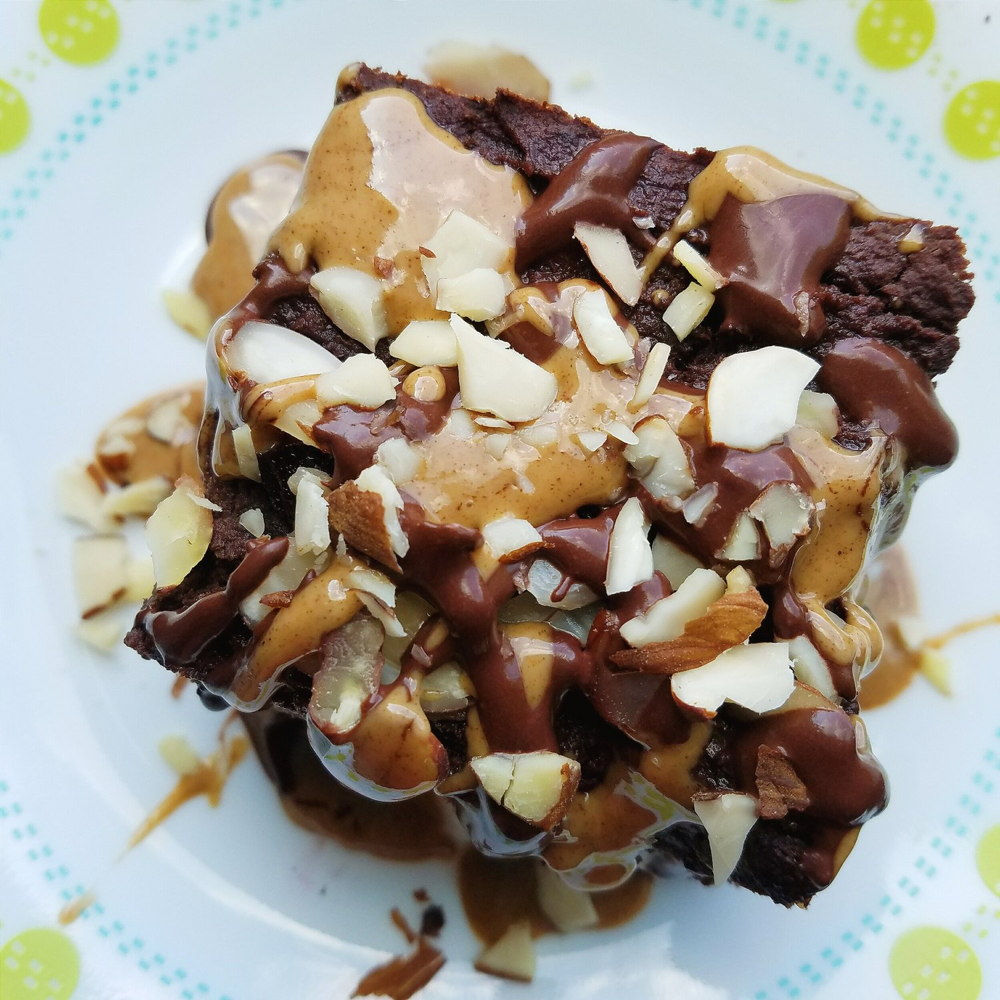
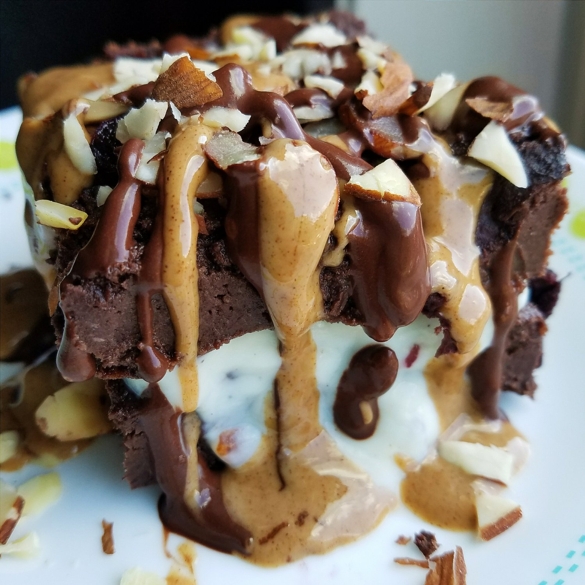
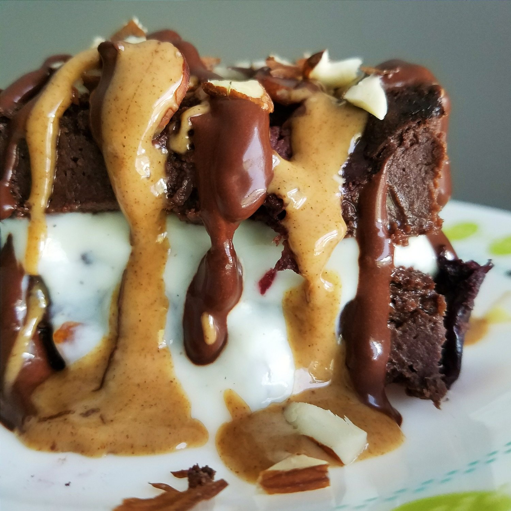

Cherry Amaretto Flourless Brownies (vegan, gluten free)



Cherry Amaretto Flourless Brownies. Vegan cherry almond brownies. Cherry almond black bean brownies. No matter how you put it, these fudgy, flavorful brownies are completely vegan, gluten free, sugar free, and completely flourless. With a spot on flavor and easy preparation, these brownies make for a perfect healthy dessert.
The key to this unbelievable recipe is...black beans! In the past, I've been hesitant with black bean brownies. The first time I ever tried a recipe out, it turned out horrible. It was when I first ventured into healthy eating, so it was one of the first recipes I experienced. It was so bad I felt scarred from it XD and now I feel like all black bean brownies will be horrible. But they're not! I've definitely had great black bean brownies since then, but I still have that initial memory.
The key is making them 1) not dry and 2) sweet. What better to sweetened than bananas?! Those are the two most important ingredients here. I also use stevia to sweeten, but coconut sugar could be used in place of stevia, or vice versa. It's up to you!
I didn't know if the flavor would come out how I wanted, but it did perfectly! I used frozen cherries, and the flavor perfectly saturated the brownies while they baked; even in placed where you don't get full cherry pieces, you taste it. And be careful with the almond extract. Don't use any more than listed, because it will overpower the recipe and ruin it. The measurement given is spot on, promise.
Today was the first day I went to the chiropractor not absolutely in pain when I walked through the door. I don't know if this is true but... I think it has a lot to do with the fact that I have my car and dog again. I mean...I knew it was stressing me out, but I think it was stressing me out more than I realized it was. Now that everything is getting back into place in my life, I think my body is feeling less stress and it's helping my pain be relieved a lot. I'm hopeful that it will go away pretty quickly in the next couple of weeks :) I feel like I can slowly see the light at the end of the chiropractor tunnel, ha. Almost there!
This weekend, I don't know exactly how I'll be celebrating July 4th. I usually spend it with my mom since she has a pool and grill. But she may be going to see other family members. So I will go down to her place regardless and stay there even if she leaves. Then I can watch her dog and my dog at the same time. I just can't bear to be in my apartment another weekend!! Especially since it's a 3-day weekend. I need a change of scenery. I also have my riding friends in that town, so I'll be riding with them Saturday and hopefully find another ride or two to join in on :D I just love riding down there where there's less traffic and people I'm most comfortable around. I'm so excited!! So even if I'm alone at my mom's house, I'm going to have so much fun haha. Independency, woo! Feels good, man.
Maybe I'll have a small grill party by myself. Are you celebrating Independence Day this weekend? If so, what're you going to be doing? I love hearing how everyone celebrates differently. :)
Bring these cherry amaretto flourless brownies to your event! I know everyone would appreciate it if you did, plus they're super easy to make. What's not to love? They're fudgy, flavorful, and completely healthy! These brownies are vegan, gluten free, sugar free, and sure to please anyone.
Cherry Amaretto Flourless Brownies
Makes: 9 servings
-
1 can of no salt added black beans (15 oz can), drained and rinsed
-
2 ripe bananas, roughly chopped
-
1/4 cup unsweetened cocoa powder
-
1/4 cup coconut flour
-
1/2 cup baking stevia (or coconut sugar)
-
2 TBSP Crazy Richards almond butter
-
1/2 tsp almond extract
-
3/4 cup frozen cherries
-
2 TBSP slivered almonds
Preheat the oven to 350 F. Add all of the ingredients to a food processor or blender, except for the cherries and slivered almonds. Blend! Continue to blend until everything is evenly smooth with no lumps or whole beans. Microwave the cherries for 45 seconds, drain off any excess water, roughly chop, and fold into the batter. Spray a 9x9 baking dish with nonstick spray and spread your brownie batter in. Sprinkle the slivered almonds on top, then bake at 350 F for 45-50 minutes.
Let cool for 10 minutes, cut into 9 servings, and enjoy! As always, I love these best once cooled in the fridge for a few hours.
Nutritional info for 1: 127 calories; 4 g fat, 20 g carbs (6 g fiber), 5 g protein